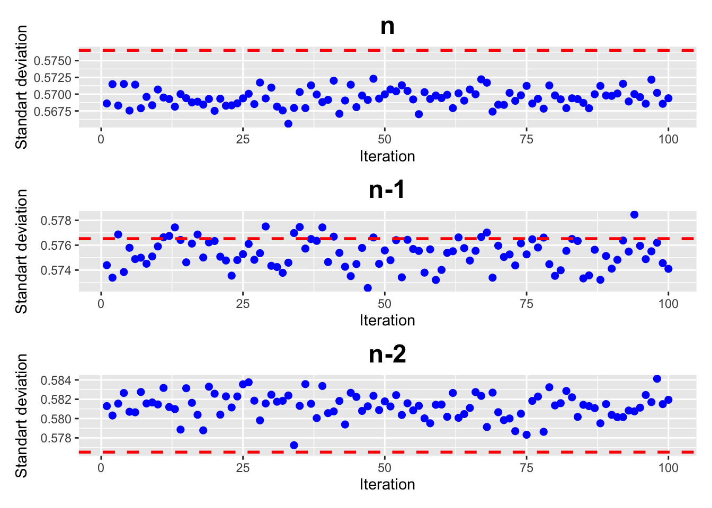

Chapter 4 Appendix A: Bessel’s Correction
Given a population of 50,000 random numbers between -1 and 1, we can calculate the standard deviation of the population.
Then, we can take multiple samples of size 50 from this population and calculate the standard deviation of each sample using different formulas: dividing by n, n-1, and n-2.
sds <- map(1:100, ~ mean(sapply(1:1000, function(x) pop_sd(sample(pop, 50), n=0)))) %>% unlist() # nolint
sds1 <- map(1:100, ~ mean(sapply(1:1000, function(x) pop_sd(sample(pop, 50), n=1)))) %>% unlist() # nolint
sds2 <- map(1:100, ~ mean(sapply(1:1000, function(x) pop_sd(sample(pop, 50), n=2)))) %>% unlist() # nolintFinally, we can visualize the results to see how the choice of denominator affects the estimated standard deviation.
df <- data.frame(
iteration = 1:length(sds),
sdd = sds
)
df1 <- data.frame(
iteration = 1:length(sds1),
sdd = sds1
)
df2 <- data.frame(
iteration = 1:length(sds2),
sdd = sds2
)
plotsd(df, "n") / plotsd(df1, "n-1") / plotsd(df2, "n-2")